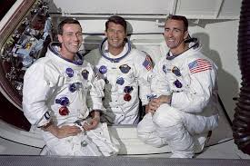
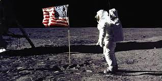

El Programa Apolo fue el tercer programa espacial tripulado de la NASA, desarrollado entre 1961 y 1972. Fue concebido con el objetivo principal de lograr que un ser humano caminara sobre la superficie de la Luna y regresara sano y salvo a la Tierra. Este ambicioso objetivo fue enunciado por el presidente de Estados Unidos, John F. Kennedy, el 25 de mayo de 1961, en el contexto de la Guerra Fría, como respuesta al éxito del programa espacial soviético. Apolo representó la culminación del esfuerzo tecnológico, científico y humano de una nación decidida a liderar la exploración del espacio.
El desarrollo del programa implicó una evolución significativa con respecto a los proyectos anteriores, Mercury y Gemini. Mientras que estos sirvieron como pruebas para las primeras misiones orbitales y las maniobras en el espacio, Apolo integró todos esos conocimientos y fue mucho más complejo en alcance y logística. Utilizó el cohete Saturno V, el más poderoso jamás construido, con más de 110 metros de altura, diseñado para transportar astronautas y módulos espaciales hasta la Luna. La nave Apolo constaba de tres partes: el módulo de mando (donde viajaban los astronautas), el módulo de servicio (que contenía el motor principal y suministros), y el módulo lunar (usado para descender a la Luna y regresar a la nave principal).
Uno de los hitos más importantes de la humanidad se produjo durante la misión Apolo 11, el 20 de julio de 1969, cuando Neil Armstrong y Buzz Aldrin se convirtieron en los primeros seres humanos en caminar sobre la superficie lunar, mientras Michael Collins orbitaba la Luna en el módulo de mando. Armstrong pronunció la histórica frase: “Es un pequeño paso para el hombre, pero un gran salto para la humanidad”. Esta misión no solo cumplió el objetivo trazado por Kennedy, sino que también demostró el dominio tecnológico de Estados Unidos en plena carrera espacial.
En total, el Programa Apolo realizó 11 misiones tripuladas, de las cuales seis lograron alunizar: Apolo 11, 12, 14, 15, 16 y 17. Cada misión contribuyó con descubrimientos científicos, recolección de muestras lunares y despliegue de instrumentos experimentales. La misión Apolo 13, aunque no logró alunizar debido a una explosión en el módulo de servicio, es recordada como una epopeya de supervivencia y habilidad técnica, ya que los astronautas lograron regresar a la Tierra con vida gracias a maniobras improvisadas desde el centro de control en Houston.
El legado del Programa Apolo es inmenso. No solo cumplió con un objetivo político y científico sin precedentes, sino que también inspiró generaciones de científicos, ingenieros y exploradores. Permitió avances en tecnología computacional, telecomunicaciones, medicina espacial y materiales. Además, sentó las bases para futuras misiones espaciales y redefinió el lugar del ser humano en el universo. Su impacto cultural sigue siendo fuerte: el alunizaje es considerado uno de los mayores logros de la historia moderna.